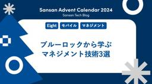
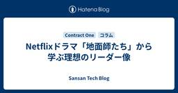
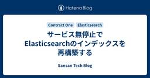
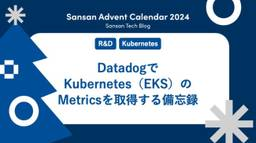
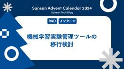
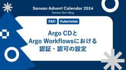
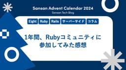

Sansan Tech Blog
https://buildersbox.corp-sansan.com/
Sansanのものづくりを支えるメンバーの技術やデザイン、プロダクトマネジメントの情報を発信
フィード

ブルーロックから学ぶマネジメント技術3選
Sansan Tech Blog
こんにちは！ Eight Engineering UnitのMobile Applicationグループでモバイルアプリ開発をしている古川です。本記事は Sansan Advent Calendar 2024 の 20日目です。Sansanでは営業DXサービス「Sansan」と名刺アプリ「Eight」の2つをモバイルアプリとして提供しています。そしてそれらの開発に携わるモバイルエンジニアたちが集まる「Mobile Tech Talk」を定期的に実施しています。この記事では、その「Mobile Tech Talk」のLT会の中で私が話したセッション「ブルーロックから学ぶマネジメント技術」の内容を…
2分前

Netflixドラマ「地面師たち」から学ぶ理想のリーダー像
Sansan Tech Blog
こんにちは。技術本部 Contract One Dev の伊藤です。現場の習慣を変える、契約データベース「Contract One」の開発業務を担当しています。私は現在、5人のチームに所属し、新規機能の開発とチームマネジメント業務を担っています。チームで働くのが好きで、より良いチームとは何か、そしてチームの成長のためには何が必要かを日々考えています。そんな折、Netflixのドラマ『地面師たち』に出会い、その内容に深く引き込まれました。一気見するほど魅力的なドラマでしたが、中でも「ハリソン山中」というキャラクターが示したリーダーシップに強い印象を受けました。今回は、彼や彼のチームを分析しながら…
13時間前
Beamer用の社内スライドテンプレートを作りました 1
1
Sansan Tech Blog
本記事はSansan Advent Calendar 2024の19日目の記事です。こんにちは。技術本部 研究開発部 Data Analysisグループの田柳です。大学院では計量経済学・時系列解析を研究しており、2024年4月に新卒として入社しました。本記事では、PowerPointやGoogle Slidesの社内スライドテンプレートを参考にしたBeamerの社内スライドテンプレート作成について紹介します。Beamerのスタイルやカラーをデフォルトから変更してみたい方の参考になれば幸いです。スタイルの作成ではbeamerでスライドづくり：Tipsとカスタムテンプレート #LaTeX - Qi…
1日前

サービス無停止でElasticsearchのインデックスを再構築する 1
Sansan Tech Blog
今年も残すところあとわずか、急いでふるさと納税の返礼品を選んでいる方も多い今日この頃ですが、皆さんはいかがお過ごしでしょうか。 どうも、技術本部 Contract One Devグループの原です。 今年のContract One Devグループは、大きめのプロジェクトとして「契約書の検索をPostgreSQLからElasticsearchを使ったものに刷新する」というものがありました。 これに関する詳しい話は弊社の川崎が別の記事を書いていますので、ぜひ読んでみてください。 note.com 検索のパフォーマンスは上がったものの、Elasticsearchを導入する際には、運用のための仕組みをい…
3日前

DatadogでKubernetes（EKS）のMetricsを取得する備忘録 1
Sansan Tech Blog
こんにちは！技術本部 研究開発部 Architectグループの宮地です。1年ぶりのブログ投稿になります。私は23卒として入社し、気づけば 2年目も終わりに近づいています。月日の流れは本当に早いですね。 さて、最近のトピックスとして、年明けから中部支店に異動となりました！大学時代を愛知で過ごしていたこともあり、地元に戻れるのはとても嬉しいです。 中部支店については、先日のアドベントカレンダーで新井が詳しく紹介していますので、そちらをご覧ください。 buildersbox.corp-sansan.com 今回はDatadogを使ってKubernetes（EKS）のMetricsを取得する際の備忘録…
3日前

機械学習実験管理ツールの移行検討
Sansan Tech Blog
こんにちは、技術本部 研究開発部 ML Platformチームでインターンをしていた岡部です。ML Platformチームでは、主に社内の研究員の成果を高速にリリースするための基盤であるCircuitの開発・運用を行っています。 CircuitはEKSをベースとしたシステムで、シングルクラスタの運用を行っています。Circuitに関する詳細は以下のスライドを参照してください。 speakerdeck.com 本記事は Sansan Advent Calendar 2024、16日目の記事です。
3日前

Argo CDとArgo Workflowsにおける認証・認可の設定
Sansan Tech Blog
こんにちは、研究開発部 Architectグループ ML Platformチームのジャン(a.k.a jc)です。 本記事はSansan Advent Calendar 2024の15日目です。 Argo CDとArgo Workflowsにおける認証・認可の設定について紹介します。
5日前

1年間、Rubyコミュニティに参加してみた感想 1
Sansan Tech Blog
※ 本記事はSansan Advent Calendar 2024およびRuby Advent Calendar 2024の14日目の投稿です🎄 こんにちは。 名刺アプリ「Eight」でエンジニアをしている鳥山（@pvcresin）です。 仕事部屋が寒すぎて脚がキンキンに冷えているので、分厚いルーズソックスみたいな靴下を履いています。サンタさん、床暖房が欲しいです🙏 さて、今回はこれまであまり関わることがなかったRubyコミュニティに参加した感想について書こうと思います。
6日前
Vol. 06 SlackのBoltを使った開発体験が良かった話 1
Sansan Tech Blog
こんにちは。技術本部 Bill One Engineering Unit Platformグループの前田です。昨年のAdvent Calendar以来の登場です。昨年はSREチームにいましたが、現在はPlatformグループに統合され、Bill Oneの改善などさまざまなことに向き合っています。今回は、SlackのBoltというライブラリについてお話しします。「へぇー、こういうライブラリもあるんだなー」という軽い気持ちで読める記事を目指しています。 なお、本記事はBill One 開発 Unit ブログリレー2024の第6弾、かつSansan Advent Calendar 2024の13日目…
7日前

中部支店にエンジニアが増えているので紹介
Sansan Tech Blog
こんにちは。技術本部 研究開発部 Architectグループの新井（KAZY）です。 私はかれこれ3年近く名古屋の中部支店で働いています。 Sansan中部支店のエンジニア界隈が私の入社以来最も盛り上がっていると感じるこの頃です。 そんな中部支店について、インターネット上にほとんど情報がないため、このブログで紹介することにしました。 「名古屋にもSansanのエンジニアがいるの？」と思われている皆さまにお届けします。 なお、本記事はSansan Advent Calendar 2024 12日目の記事です。
8日前
Vol. 05【Qodo Merge（旧PR-Agent）】Bill OneでのAIコードレビューの取り組みと得られた結果
Sansan Tech Blog
こんにちは！技術本部 Bill One Engineering Unitの中垣です。 今年も残すところわずかですね。ふと今年の抱負を達成できたのか考えてみたところ、今年の抱負がなんだったか忘れてしまったことに気づきました。この記事は、Bill One 開発 Unit ブログリレー2024の第5弾&Sansan Advent Calendar 2024の11日目です。Bill Oneでは2024年9月から、コードレビューの効率化・品質の向上のためにAI駆動のコードレビューツール、Qodo Merge（旧PR-Agent）を導入しています。 そこで本記事ではBill OneでのQodo Merge…
9日前
SplunkのCIM化
Sansan Tech Blog
こんにちは！技術本部 情報セキュリティ部 CSIRTグループ所属の川口です。普段は検知ルールの運用やSIEM基盤の開発・運用などの業務に取り組んでいます。2023年2月から2024年2月の間でSIEM基盤をAOS（Amazon OpenSearch Service）からSplunkへ導入・移行しました。その移行については、弊社の吉山がブログで紹介しているので、ぜひご覧ください。 buildersbox.corp-sansan.com今回はSplunk導入後にSplunkを活用していく上で重要となるCIMの適用について、どのように進めたのかをまとめていきます。本記事は、Sansan Advent…
10日前
Vol.04 データベース書き込み性能劣化への対応
Sansan Tech Blog
Bill One 開発 Unit ブログリレー2024の第4弾になります！ こんにちは。技術本部 Bill One Engineering Unitの向井です。 Bill Oneは急速にサービスの規模を拡大しており、それにあわせてトラフィックやデータ量も急激に増加しています。 特にサービスのローンチから最も長い歴史をもつ請求書受領の機能はこの傾向が顕著であり、さまざまな問題が発生しています。 そのひとつがデータベースのパフォーマンスです。 サービスのローンチからしばらくの間は、主に参照系のクエリにおいてパフォーマンス問題が発生していました。 この問題に対してはスロークエリにひとつずつ対処するこ…
11日前
SIEM on AOSからSplunkへ：SIEM基盤移行について振り返り
Sansan Tech Blog
こんにちは！技術本部 情報セキュリティ部 CSIRTグループ所属の吉山です。 普段の業務では、AWSをはじめとする各種クラウド環境のセキュリティ向上・統制やSIEM基盤の開発・運用などに向き合っています。 今回は、昨年12月〜今年2月頃にかけて行った新SIEM基盤の導入・移行について、1年経ったので振り返りとして記事にまとめていきたいと思います。 本記事はSansan Advent Calendar 2024 - Adventar8日目の記事です。 移行開始までの道程 SIEM on AOSが抱えていた課題 なぜSplunkを選んだのか 移行中のお話 稼働開始後 ログ取り込み範囲の拡大、取り込…
12日前
Slackに投稿された通達をNotionDBでToDo化する
Sansan Tech Blog
本記事はSansan Advent Calendar 2024の7日目の記事です。 こんにちは。 技術本部研究開発部の高橋寛治です。 Slackに投稿された読了や対応を求められる通達の対応漏れを防ぐために、自動でNotion上にToDoを追加する仕組みを作りました。 その成り立ちや機能、実装の概要、効果について紹介します。
13日前
【イベントレポート】VPoEの視点で見る組織の進化 〜組織変革とグローバル連携、次世代リーダー育成の戦略〜
Sansan Tech Blog
2024年10月9日、Sansan株式会社はイベント「VPoEの視点で見る組織の進化 〜組織変革とグローバル連携、次世代リーダー育成の戦略〜」を主催しました。イベント会場となったのは、JR渋谷駅に隣接する渋谷サクラステージ。弊社は2024年9月30日に同所へとオフィス移転したのですが、オフィスでのイベント開催は移転後初でした。オフライン&オンラインのハイブリッド形式で開催いたしました。本イベントでは、キャディ株式会社とSansan株式会社、株式会社メルペイの3社のVPoEが登壇。それぞれ異なる事業モデルや事業フェーズ、開発組織の構造・規模の中で、マネジメントに向き合う3者が、組織変革やグローバ…
13日前
Vol.03 良いプロダクトは良いチームから生まれるはなし
Sansan Tech Blog
こんにちは、プロダクトデザイナーの長澤です。 この記事はBill One 開発 Unit ブログリレー2024第3弾です！ 今日はデザイナー視点での開発チームの話をします！
14日前
EightでStripeのトライアル機能を導入した話
Sansan Tech Blog
日が暮れるのが早くなり、各所でイルミネーションが始まり一年の終わりを感じる今日この頃、みなさんどうお過ごしでしょうか？ 今日はEightで展開している中小企業向け名刺管理サービス「Eight Team」にて無料トライアル機能を開発した話をしようと思います。なお、本記事は Sansan Advent Calendar 2024, JP_Stripes Advent Calendar 2024 6日目の記事です。
14日前
レガシーコードリーディング会を継続するために意識したこと
Sansan Tech Blog
はじめに 技術本部 Eight Engineering Unitの山本です。今回はAndroidチームで行っているレガシーコードリーディング会について話します。なお、本記事はSansan Advent Calendar 2024の5日目の記事です。 自分は既に8年近くEightに携わっており、そこそこ古株になります。そのために古くから残っていて最新の設計にできていない古いコードについても知っています。 しかし、新しく入ったメンバーには最近の設計しか説明しないので、古いコードの調査や改修に時間がかかる問題がありました。 新しい設計に書き直すリファクタリングをするのが望ましいとは思いますが、コスト…
15日前
Vol.02 組織として、定期的に品質向上と改善に向けた取り組みをどのように推進しているか
Sansan Tech Blog
Bill One 開発 Unit ブログリレー2024の第2弾になります！ なお、本記事はSansan Advent Calendar 2024の4日目の記事です。
16日前
BigQueryのストレージ課金モデルの自動最適化
Sansan Tech Blog
研究開発部の田仲です。 本記事は、Sansan Advent Calendar 2024の3日目の記事です。 背景 どちらの課金モデルが適しているかを判断する 自動的に安い方にする 処理概要 ポイント まとめ
17日前
Cloud ComposerとCloud Run Jobsを組み合わせたデータパイプラインの構築
Sansan Tech Blog
こんにちは。研究開発部 Architectグループの中村です。 本記事は、Sansan Advent Calendar 2024の2日目の記事です。 今回は、Cloud ComposerとCloud Run Jobsを組み合わせたデータパイプラインの実装について紹介します。
18日前
本番相当の環境でdbt runを安全に検証する
Sansan Tech Blog
はじめに 開発環境のご紹介 dbt run テスト dbt run によって生成されたデータは一定期間で削除する必要がある 開発の影響があるモデルだけテストしたい GitHub Actions を使いたい まとめ はじめに こんにちは。技術本部研究開発部 Architectグループの田辺です。本記事は Sansan Advent Calendar 2024 の 1日目です。弊チームでは新規dbtモデル開発時に dbt run を検証環境で検証してから本番環境へ反映させていました。検証環境にあるデータ量は少なく、ソースとなるプロダクトデータを模したものも検証用のものであるため、そこで期待通りに動…
19日前
業務中に出会ったOSSのバグ修正を行いコントリビュートした話
Sansan Tech Blog
こんにちは。9月にDigitization部データ化グループに入社した山内です。 PythonのORMライブラリであるSQLAlchemyのバグを業務中に見つけました。 今回はそのバグを修正してOSSにコントリビュートした過程を紹介します。
20日前
FalconTech 2024参加記録
Sansan Tech Blog
こんにちは！情報セキュリティ部CSIRTグループプロダクトセキュリティチーム所属の北澤と廣川です。 普段は営業DXサービス「Sansan」やインボイス管理サービス「Bill One」をはじめとしたSansanが提供するプロダクト全般のセキュリティ向上を目的とした業務に取り組んでいます。 今回は2024年11月6日にマクニカ社主催のCrowdStrikeユーザーカンファレンスである、FalconTech 2024に情報セキュリティ部のメンバー4名で参加してきました。実践的な知見が得られる同イベントの魅力について、参加レポートをお届けします！
21日前
Vol. 01【PostgreSQL】わたしのクエリ、遅すぎ...？Row Level Securityに潜むLEAKPROOFの罠
Sansan Tech Blog
技術本部 Bill One Engineering Unit 共通認証基盤チームの古石です。 Bill One 開発 Unit ブログリレー2024の記念すべき第一弾なのですが、少々ニッチな話になります。ごめんなさい。
21日前
DBバージョンアップ検証の不安と大変さにどこまで向き合うか考える
Sansan Tech Blog
こんにちは、Digitization部で名刺データ化システムの開発をしている荻野です。 先日弊チームは、名刺データ化システムのDBをAurora2（MySQL5.7互換）からAurora3（MySQL8.0互換）へバージョンアップしました。 DBのバージョンアップは影響が大きい一方で、懸念が完全になくなるまで検証コストを掛けるのが難しい業務だと思います。 この記事では弊チームがどういう向き合い方をしたかのメモを残しておきます。 類似の中〜大規模なDBバージョンアップにどう向き合うかの知見やノウハウの一例として参考にしていただければ幸いです。 Aurora2はすでにEOLを迎えて公式ドキュメント…
23日前
Eightの検索機能をCloudSearchからOpenSearchに移行して得たもの
Sansan Tech Blog
こんにちは！技術本部Eight Engineering Unitでサーバーサイドエンジニアをしている常盤です。 名刺アプリ「Eight」では最近、検索機能のうち2つをAmazon CloudSearchからAmazon OpenSearch Serviceに移行しました。今回は、移行した背景やそのメリットを紹介します。
24日前
Vol.00 Bill One 開発 Unit ブログリレー2024を開催&アーキテクチャConference 2024に協賛します！
Sansan Tech Blog
こんにちは！技術本部 Bill One Engineering Unitの樋口です。 最近キーボードにハマっていてよくキースイッチやキーキャップを漁っているのですが、11月だけで2台もキーボードが増えてしまいました。近年とても完成度の高いキーボードが多いので困ってしまいますね。 さて今回は、Bill Oneについて2点お知らせがありますので最後までお読みいただけると幸いです。
25日前